Notre voyage • Allemagne 2026
23 jours sur les routes allemandes
Des villes liées aux frères Grimm jusqu’aux rives du Rhin, en passant par le nord du pays, des châteaux, des villages, quelques surprises et beaucoup de souvenirs.
Le début de l'aventure
Une route des contes… qui nous emmènera bien plus loin
Cet été, Léon nous a emmenés sur les routes d’Allemagne. Nous étions partis avec une idée en tête : suivre une partie de la Route allemande des contes, sur les traces des frères Grimm.
Mais comme souvent avec Léon, l’itinéraire s’est vite élargi. Des villages de Hesse aux villes du nord, puis jusqu’aux rives du Rhin, ce voyage nous a réservé quelques très belles surprises… et aussi deux ou trois endroits qui nous ont un peu moins convaincus.
01
Francfort • Hanau • Steinau • Marburg • Alsfeld • Kassel
La route des contes
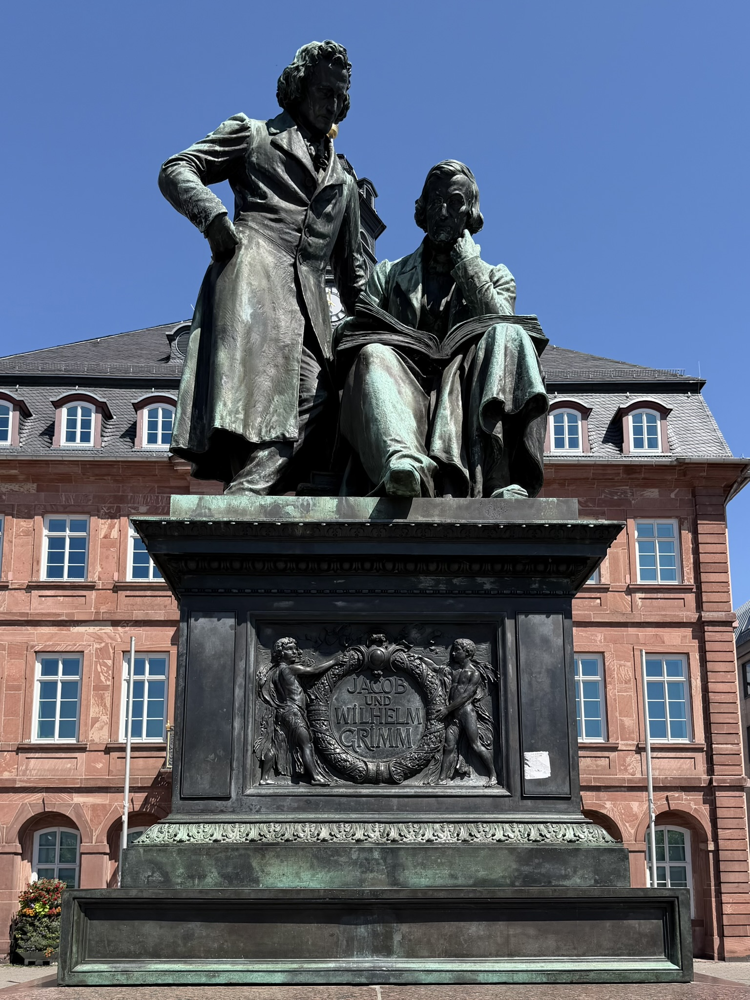
C’est avec elle que notre voyage allemand a vraiment commencé : la Route allemande des contes, inspirée de l’univers des frères Grimm. Sur le papier, elle relie les villes et villages associés à leur vie, à leurs travaux et aux histoires qu’ils ont contribué à rendre célèbres. Pour nous, c’était surtout un joli fil conducteur pour découvrir une Allemagne que nous connaissions finalement assez peu.
Francfort a marqué le début de cette aventure, avant de rejoindre Hanau, ville natale de Jacob et Wilhelm Grimm. La ville porte évidemment leur empreinte, même si une grande partie de son patrimoine historique a disparu pendant la Seconde Guerre mondiale.
Puis direction Steinau an der Straße, et là, l’ambiance change complètement. Les frères Grimm y ont passé une partie de leur enfance et leur ancienne maison est aujourd’hui devenue un musée. Avec ses maisons à colombages et son centre ancien, Steinau correspond déjà beaucoup plus à l’image que l’on pouvait se faire de cette route des contes.
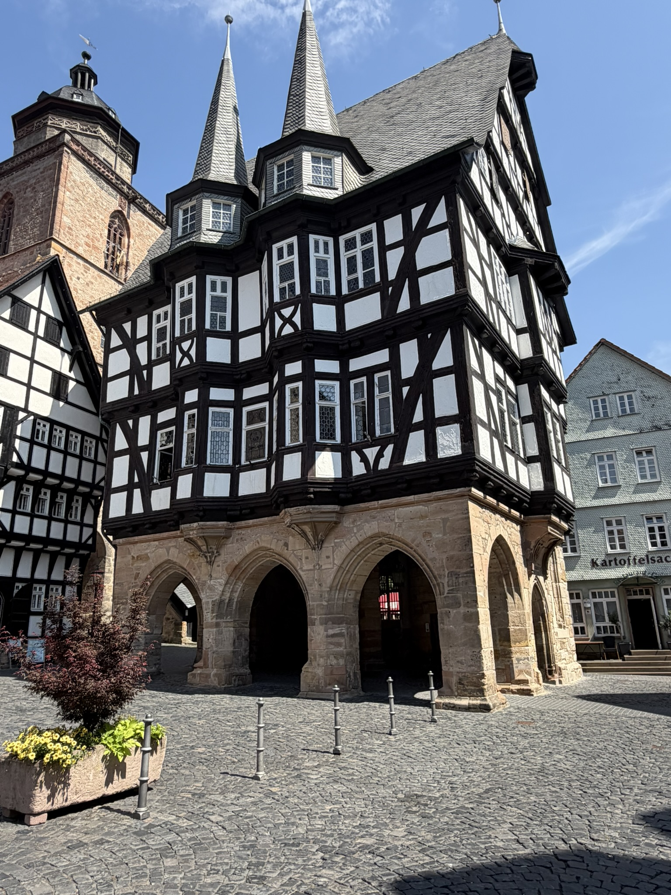
La suite nous a conduits à Marburg, dominée par son château et construite à flanc de colline. Une ville pleine de caractère… mais qui rappelle rapidement aux cyclistes que toutes les villes allemandes ne sont pas plates !
Et puis il y a eu Alsfeld. Une de ces étapes dont on n’attend pas forcément grand-chose et qui finit parmi les beaux souvenirs du voyage. Son centre historique, ses maisons à colombages et son atmosphère nous ont vraiment séduits. C’est exactement le genre de petite ville que l’on aime découvrir avec Léon.
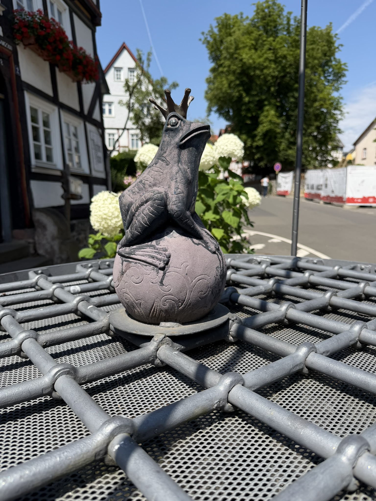
Ici, les histoires des frères Grimm ne sont jamais très loin. Il suffit parfois de regarder les petits détails pour voir surgir un personnage de conte au détour d’une rue.
Enfin, Kassel nous a offert un tout autre décor. Le gigantesque Bergpark Wilhelmshöhe et son monument d’Hercule donnent une idée de la démesure du lieu. Nous y avons également retrouvé les frères Grimm au GRIMMWELT, consacré à leur œuvre et à leur héritage.
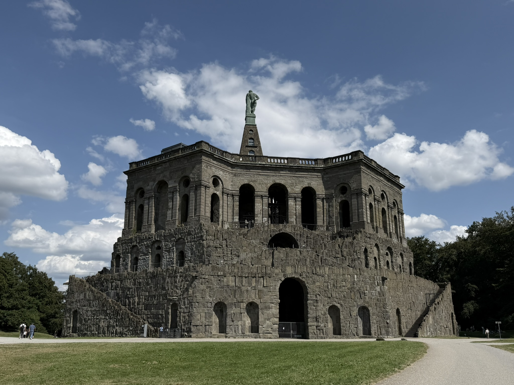
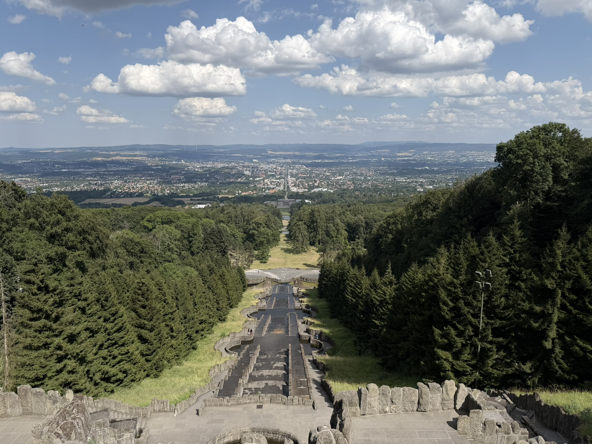
Au bout de ces premières étapes, on avait compris quelque chose : la Route des contes allait être le fil rouge du voyage, mais certainement pas une obligation de tout voir. Et c’était très bien comme ça. Avec Léon, on préfère depuis longtemps garder la liberté de s’arrêter là où l’envie nous prend.
02
Hann. Münden • Göttingen • Trendelburg • Bodenwerder • Hamelin
Au pays des légendes
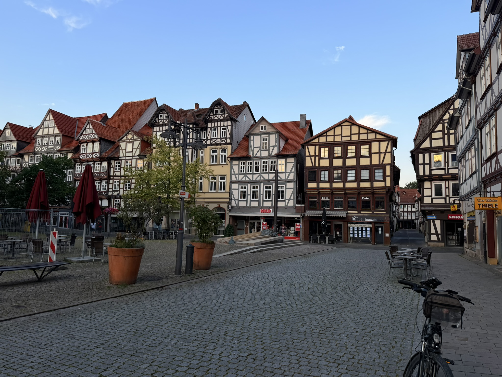
Après Kassel, la Route des contes nous a entraînés vers Hann. Münden, et ce fut l’une des très belles découvertes du voyage.
Installée au confluent de la Werra et de la Fulda, qui se rejoignent ici pour former la Weser, la ville possède un superbe centre historique avec ses nombreuses maisons à colombages.
Mais Hann. Münden restera aussi pour nous associée à un autre souvenir : notre sortie en canoë.
Léon était installé au club de canoë et nous en avons profité pour mettre notre canoë gonflable à l’eau. Une façon complètement différente de profiter de l’étape, et le genre de parenthèse que nous aimons particulièrement pendant nos voyages.
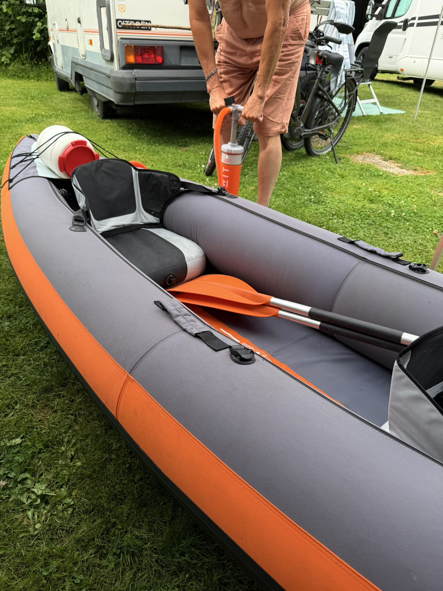
À Göttingen, changement d’ambiance. Cette grande ville universitaire est étroitement liée aux frères Grimm, qui y ont enseigné au XIXe siècle.
Mais il y a surtout une tradition qui nous a amusés : celle de la célèbre Gänseliesel, la « fille aux oies », installée devant l’ancien hôtel de ville.
Les étudiants qui obtiennent leur doctorat ont pour tradition de grimper jusqu’à sa statue pour l’embrasser. Une tradition que nous avons bien sûr observée… mais pas testée : aucun diplôme allemand à fêter de notre côté !
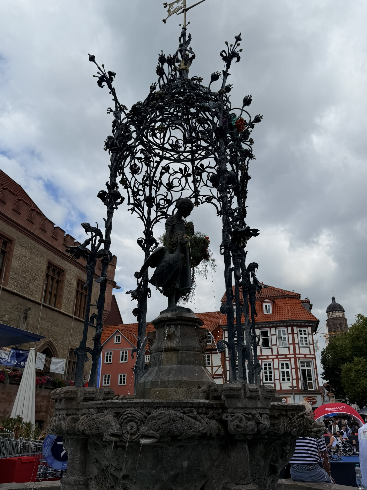
À Trendelburg, nous replongeons dans l’univers des contes. Cette petite ville de Hesse est dominée par un château médiéval dont la haute tour est aujourd’hui associée à la légende de Raiponce.
Bien sûr, la princesse aux interminables cheveux n’a jamais vécu ici ! Mais avec cette tour qui domine la vallée, les remparts et le paysage environnant, le décor semble tout droit sorti d’un livre de contes.
C’est aussi ce qui fait le charme de cette route : découvrir de véritables lieux historiques tout en retrouvant les histoires qui ont bercé notre enfance.
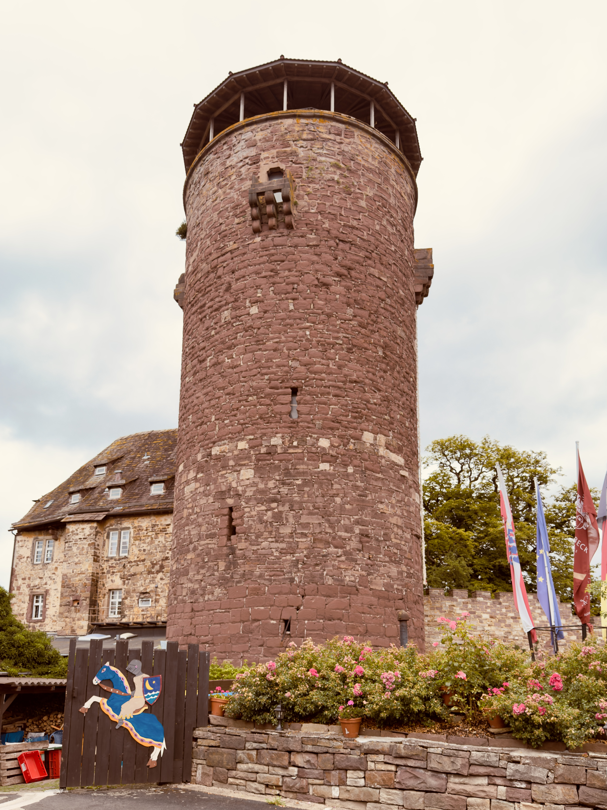
Puis nous avons rejoint Bodenwerder, la ville du célèbre baron de Münchhausen. Ce personnage a réellement existé, mais il est surtout passé à la postérité grâce aux aventures complètement extravagantes qu'on lui a attribuées : voyages impossibles, exploits invraisemblables et histoires à dormir debout !
Ici, impossible de l'oublier. Statues, fontaines et représentations du baron ponctuent la ville et rappellent ses incroyables aventures.
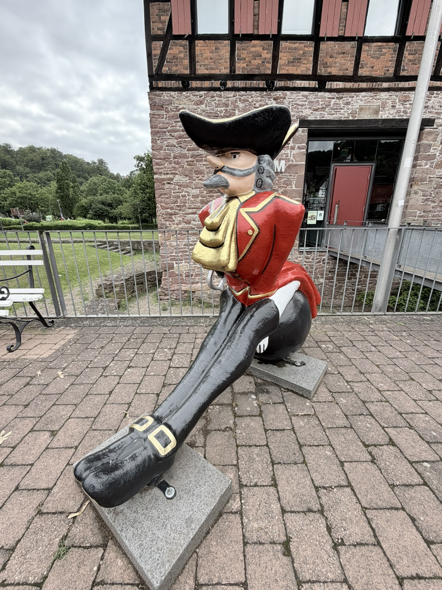
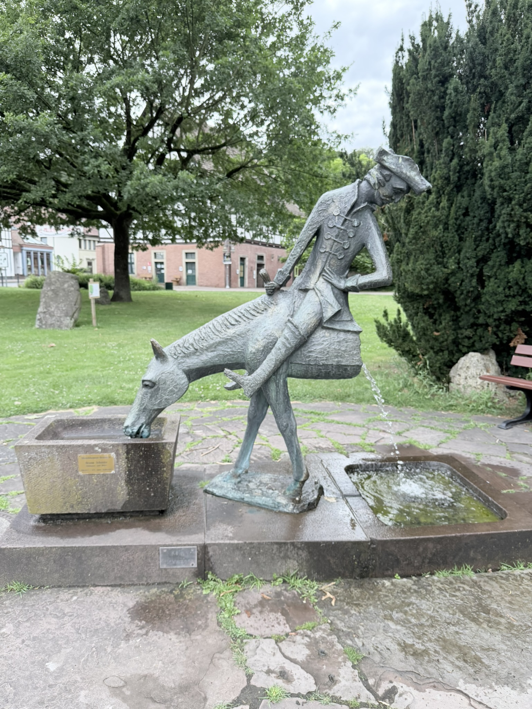
Mais notre meilleur souvenir de Bodenwerder n'a finalement rien à voir avec ses aventures fantastiques. Nous sommes tombés sur une fête au bord du fleuve, avec des chanteurs et une chorale allemande.
Un moment drôle, chaleureux et complètement imprévu, jusqu'à entendre la version originale de Lili Marleen. Typiquement le genre de soirée que nous n'aurions jamais pu programmer dans un roadbook et qui finit pourtant parmi les souvenirs du voyage.
Dernière étape de cette partie de la Route des contes : Hamelin, célèbre pour la légende du Joueur de flûte. Selon le récit popularisé par les frères Grimm, un mystérieux joueur de flûte aurait débarrassé la ville de ses rats, avant de se venger lorsque les habitants refusèrent de le payer.
Mais Hamelin ne se résume pas à cette histoire. Son centre ancien possède de magnifiques façades Renaissance, des maisons à colombages et de jolies rues où il fait bon se promener.
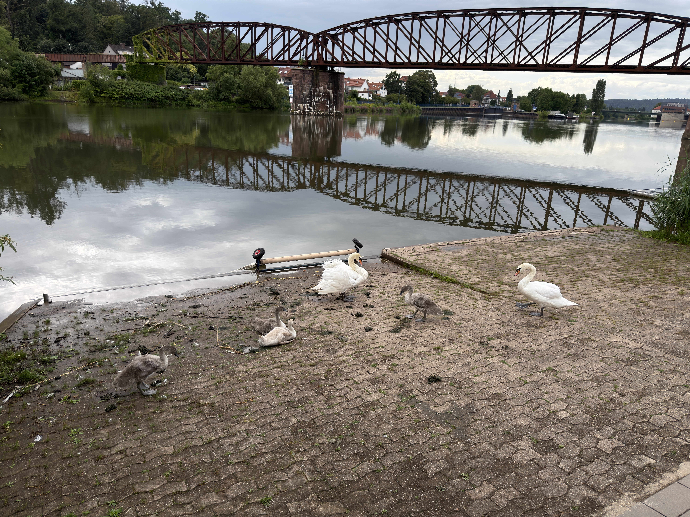
Ici, la légende du Joueur de flûte est absolument partout. Et quand on dit partout, c'est même jusque sous nos pieds !
De petits rats incrustés dans les pavés accompagnent les visiteurs à travers les rues de la ville. Il suffit de suivre leurs traces pour retrouver les lieux associés à cette célèbre histoire.
Une façon plutôt amusante de découvrir Hamelin, le nez en l'air pour admirer les façades… et les yeux au sol pour ne pas perdre la piste des rats !
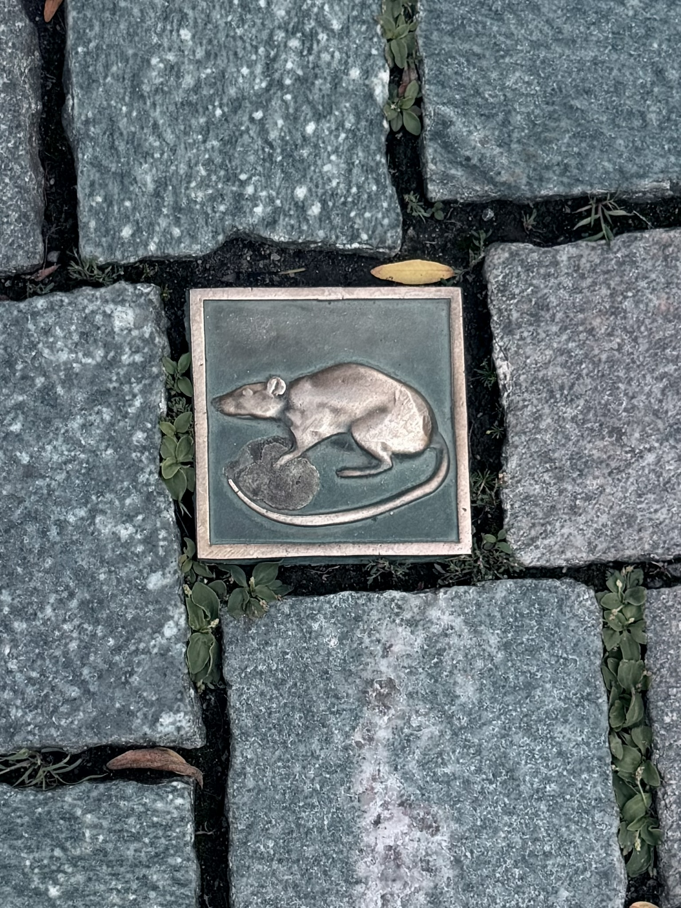
Entre les frères Grimm, Raiponce, la fille aux oies, le baron de Münchhausen et les rats de Hamelin, cette partie du voyage avait quelque chose d'assez improbable. Mais ce que nous en retenons surtout, ce sont les moments imprévus : sortir le canoë à Hann. Münden, tomber sur une fête à Bodenwerder ou simplement suivre les rats dans les rues de Hamelin. Les histoires nous ont donné le fil conducteur, mais ce sont les moments vécus en chemin qui ont fabriqué nos propres souvenirs.